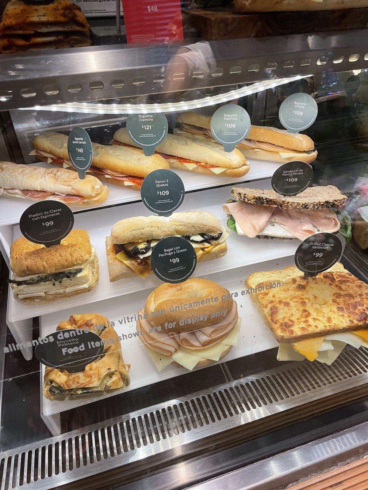

A night market, a charming stranger, a missing bus — and a $150 taxi ride I'll never forget. My very own evening of getting hopelessly lost in Playa del Carmen.
I was travelling solo through Mexico, and I'd signed up for a full-day tour along the Riviera Maya — that gorgeous stretch of Caribbean coast where the sea is the colour of a swimming pool and the air smells of salt and grilled corn. There was just one small problem. Everyone on the tour spoke only Spanish. Every single person. The guide, the driver, every cheerful passenger on that bus — and there I was, smiling and nodding and understanding precisely nothing.
Everyone, that is, except one. Halfway down the aisle sat a young Chinese woman, also travelling alone, who spoke beautiful English. We found each other the way two castaways find each other on a crowded raft — with enormous relief. From that moment on we were a little team of two. We chatted the entire day: where we'd been, where we were headed, the funny things we'd seen. The hours flew. It was, honestly, one of the loveliest, easiest days of conversation I'd had on the whole trip.
I should have known. The day was going far too well.
By evening the tour rolled into its final stop: an enormous, sprawling night market near Playa del Carmen. And when I say long, I mean long — stall after stall after stall, vanishing into the warm dark, strung with fairy lights and loud with music, the air thick with the smell of tacos, churros, roasting meat, and sweet smoke. The guide gave us about one hour to wander, then back to the bus.
The girl and I drifted through it together, pointing at trinkets, laughing at the haggling, soaking up the energy of the place. An hour sounds like a long time. It is not, when a market goes on forever and you're enjoying yourself.
As we started making our way back toward where the bus had dropped us, my stomach growled. I'd been so busy talking all evening that I'd forgotten to eat. I spotted a little café-deli counter and decided I'd grab a quick burger and a cold drink for the road. "You go ahead," I told my friend. "Wait for me at the bus — I'll be two minutes."

Famous last words. I bought my burger. I paid. I turned around, food in hand, ready to stroll back to the bus like a man without a care in the world.
And then it hit me: I had absolutely no idea where the bus was parked.
Picture it. A vast night market in every direction. Identical-looking lanes. No phone number for the guide. No phone number for the girl — we'd never thought to swap contacts, because why would you, when you'd been side by side all day? No WiFi. And not a word of the local language to ask for help.
I walked one way. Then the other. Every corner looked like the last corner. The minutes peeled away. I told myself the bus had to be just ahead — and it never was.
Meanwhile, back at the bus, things were unfolding without me. The guide, doing a head count, asked the girl where the missing tourist had gone. And she answered — perfectly reasonably — "He went to Starbucks." (I suppose, to her, one coffee-and-snack counter looked much like another.) So off they went to search the Starbucks for me.
The trouble is, I was nowhere near the Starbucks. I was at a completely different food stall, on a completely different lane, getting more lost by the second. They looked where they thought I'd be; I was where nobody thought to look. We were two ships passing in a sea of fairy lights.
"If only I had gone to that Starbucks, they would have found me in a heartbeat. But it never even crossed my mind. Of all the food stalls in all the world, I walked into the wrong one."
And then — the thing I'd been dreading and somehow still couldn't believe — the appointed hour passed, the head count came up one short in the wrong direction, and the tour bus left without me. Gone. Tail lights into the Caribbean night, carrying my new friend, the guide, and one very important detail I hadn't thought about until that exact moment.
There's no graceful way out of being stranded at a night market in a country whose language you don't speak. There was only one option: find a taxi, point hopefully in the direction of my hotel, and brace for the fare. By the time I finally walked into my room, that ride had cost me about US$150. The most expensive burger I have ever eaten, by some distance.
But the taxi wasn't the worst of it. In my hurry to dash off for food, I'd left my small backpack and power bank on the tour bus. And here's the cruel timing: early the next morning I had to fly to another city. There was no window — none at all — to track down the tour company, explain myself in sign language, and recover my things. The bag and the power bank were simply gone, swallowed by Mexico, never to be seen again.
And there was one more loss, quieter than the rest. I never saw the girl again. We'd spent a whole wonderful evening as companions, and yet — no contact details, no WiFi, no second chance. She had appeared in my day like a small gift and slipped out of it just as quickly, off to her own next adventure. I still wonder, now and then, what she made of the disappearing tourist who went for a burger and never came back.
"She entered my evening as suddenly as she left it. One bus ride of easy laughter, and then gone — no name in a phone, no way to say thank you. Travel gives you these people, and sometimes it takes them away just as fast."
I can laugh about it now — mostly. And like every good travel disaster, it left me wiser. So here, hard-won and slightly bruised, are my rules of the road:
Mexico, you got me good. The night market, the burger, the vanished friend, the long quiet taxi ride home — it's all part of the story now, and I wouldn't trade the memory for anything. Well, maybe for the backpack. And the power bank. But not the friend — she's exactly where a good travel memory should be: just out of reach, and impossible to forget.